Le décor
Boiseries patinées, affiches rétro, lettrage ardoise et or, chaises bistro et nappes blanches.
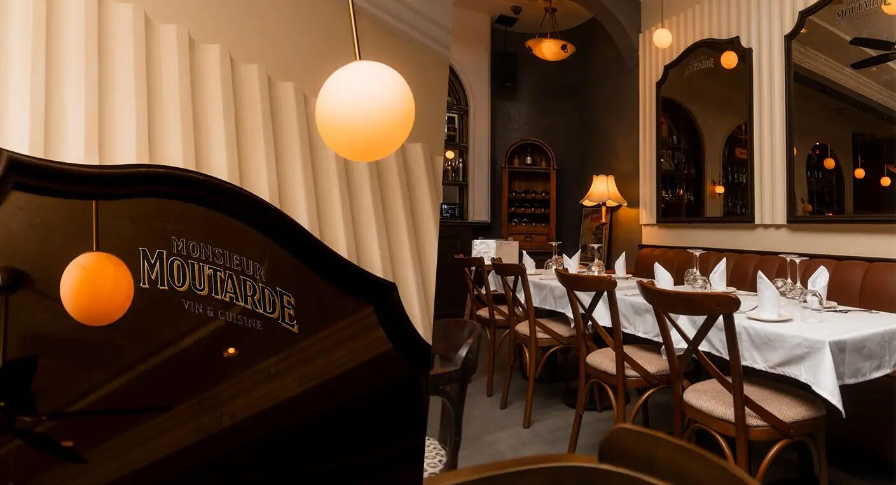
Vin & Cuisine · Gauthier, Casablanca
Un bistro parisien au cœur de Gauthier.
Chez nous, des bons produitsdes recettes revisitéesdes vins bien choisisl'esprit bistro parisienun service continu 7j/7
La Maison
Sous l'auvent jaune moutarde, on pousse la porte d'un vrai bistro parisien : boiseries sombres, affiches anciennes, nappes blanches et bouteilles alignées. Monsieur Moutarde sert les grands classiques de brasserie — cordon bleu, souris d'agneau, tarte aux pommes maison — pour un déjeuner, un dîner ou un verre entre amis.
Viandes, poissons et desserts classiques, cuisinés maison avec de bons produits, du matin jusqu'à 1h.
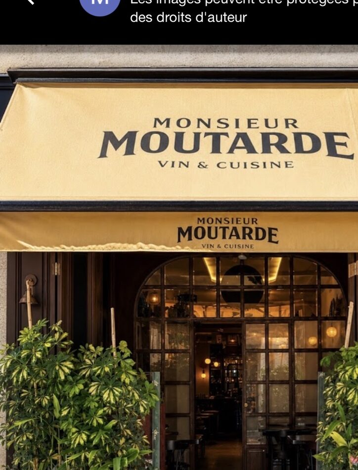
L'esprit
Boiseries patinées, affiches rétro, lettrage ardoise et or, chaises bistro et nappes blanches.
Vin & cuisine : une carte de vins français et marocains, au verre ou à la bouteille, pour trinquer à la française.
Service continu 7j/7, de 11h à 1h. Du déjeuner rapide au dîner qui s'éternise.
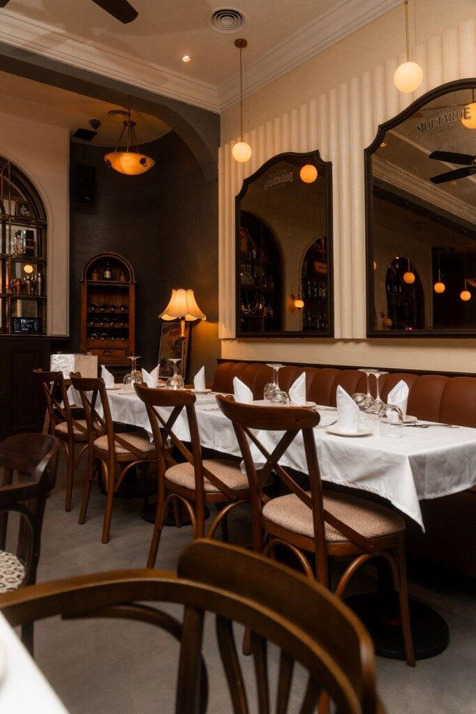
« Ici, on mange et on trinque à la française. »— Monsieur Moutarde
La Carte
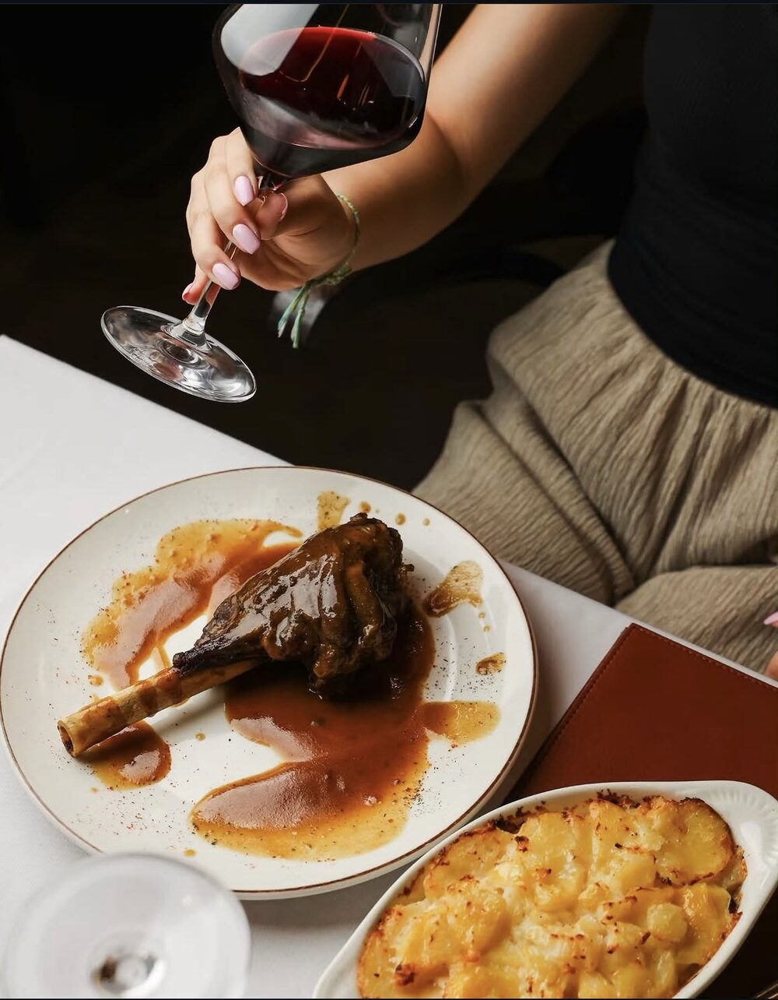
Prix indicatifs en dirhams (MAD). Carte des vins sur demande.
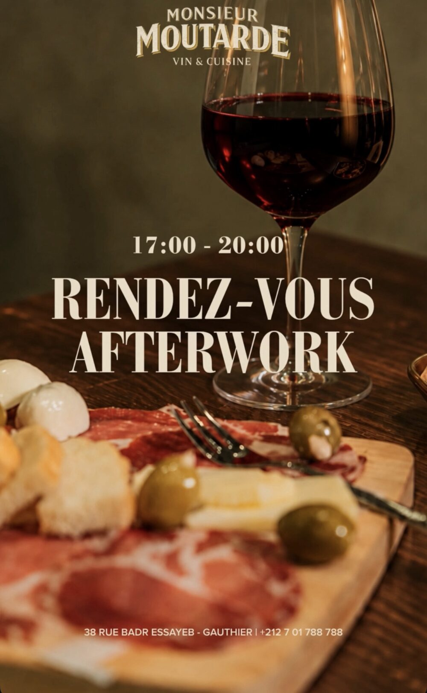
Tous les vendredis · 17h – 20h
Chaque vendredi soir, on laisse la semaine derrière soi : un verre de vin, une planche à partager et l'ambiance du bistro, entre collègues ou entre amis.
Prix en dirhams (MAD), selon l'ardoise du moment.
Réserver sa tableEn images
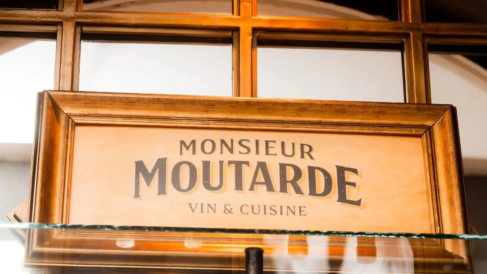
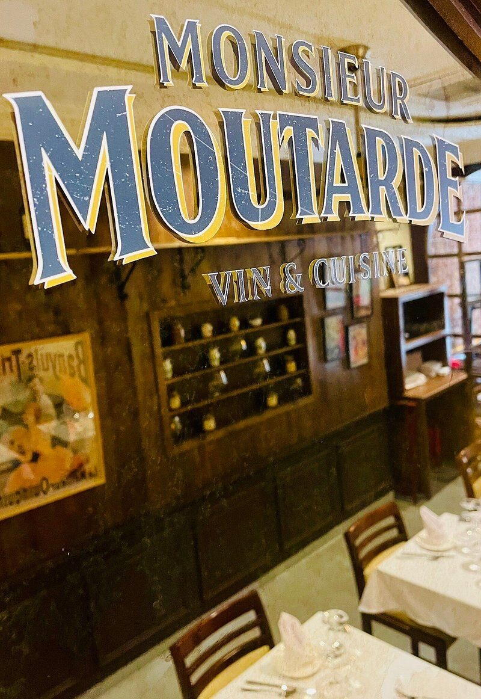
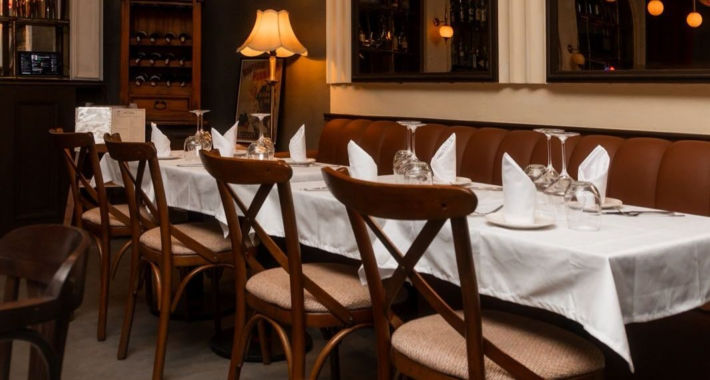
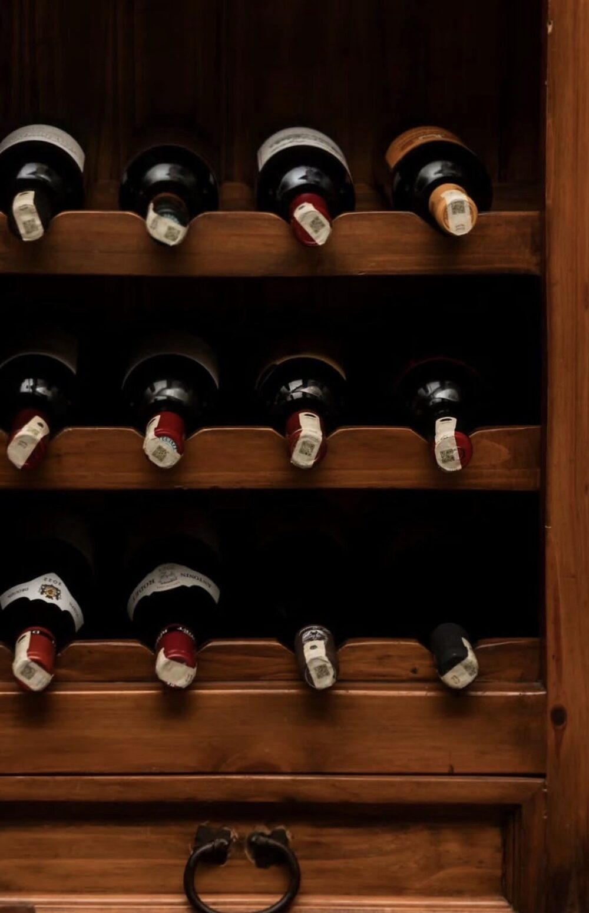
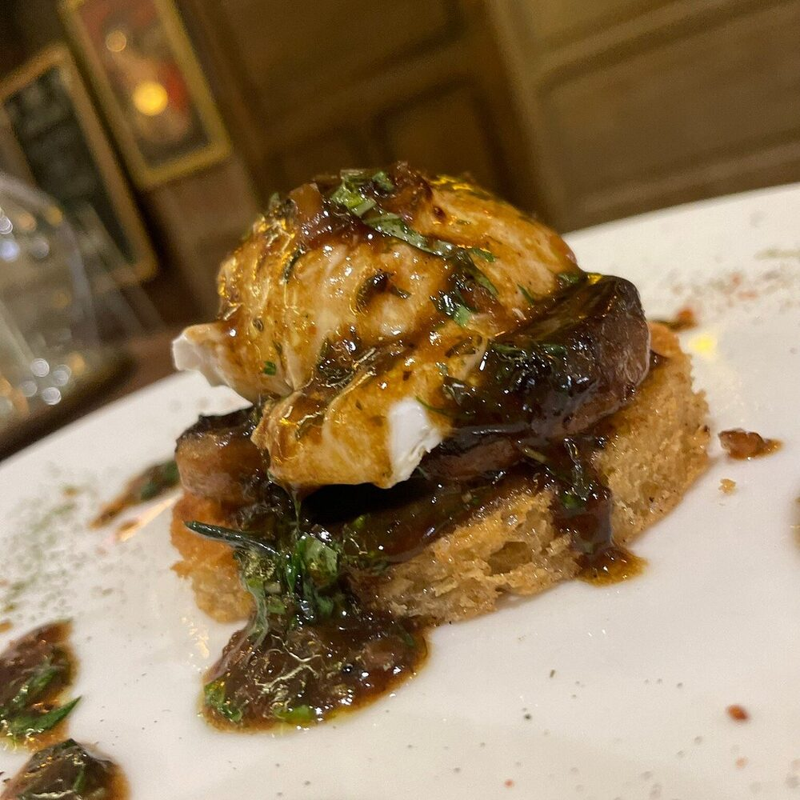
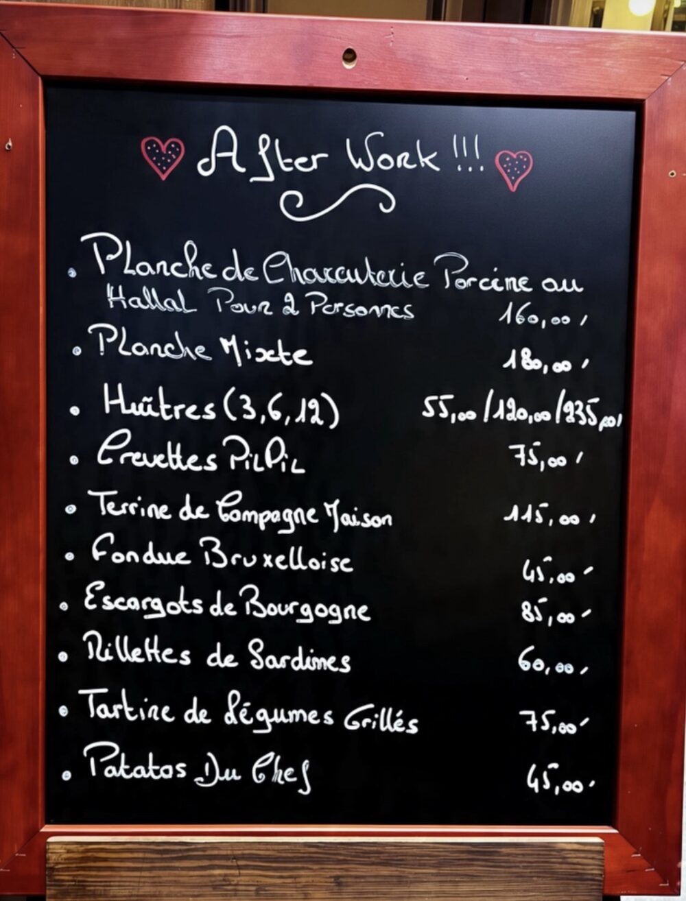
38 rue Badr Assayab, Gauthier
Casablanca 20000, Maroc
Service continu 7j/7
11h – 1h (vendredi dès 10h30)